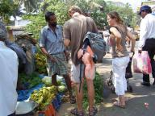

|


|
Ondertussen in Nederland
» exacte locatie
 Best wel gek om ineens bij het thuisfront te horen en de reis op een
afstandje mee te maken. Elke dag mailen Joost en ik elkaar onze
belevenissen. Zo weet ik dat Joost en Erik vandaag veilig zijn
aangekomen in Salalah, goed gedaan mannen! En ik vertel Joost vooral
wat Siebe allemaal aan het doen is. Ik vind het zo leuk iedereen in
Nederland weer te zien maar het is wel saai zonder Joost erbij. Ik ben
ook zo gewend dat hij altijd er bij is. Siebe is ineens een heleboel
nieuwe dingen aan het doen. De eerste weken wilde hij alleen maar
lopen, lopen en nog eens lopen. Nu het nieuwe van het lopen er een
beetje af is heeft hij meer oog voor z'n nieuwe speeltjes en wil ook
weer boekjes lezen. Hij is ook druk met dingetjes, bijvoorbeeld
onderzetters, te pakken en ergens anders op een rijtje neer te leggen.
Magneetbeestjes verdwijnen onder het kleed om er een paar uur later
weer onder vandaan gehaald te worden om op de prullenbak te plakken.
Met de prullenbak is het oppassen want naast papier verdwijnen er soms
ook spulletjes in. Zoals het hoesje van de oude mobiel van oma. Bellen
is ook leuk, dan doet hij de mobiel tegen zijn oor en zegt dan heel
hard 'ha'. Alle lampen noemt hij 'maan'. Vorige week nog genoten van
de sneeuw. Mijn vader heeft Siebe een heel eind getrokken op de slee.
Verder is Siebe heel veel aan het eten, hij krijgt 2 keer ontbijt,
lunch en 2 keer avondeten en ook nog tussendoortjes. Hij eet nog meer
dan ik. Andere kindjes vindt hij erg interessant en hij aait ze heel
lief. Zo ook zijn pasgeboren neefje Fausto. Wandelen is ook een feest.
Hij herkent de plaatjes uit z'n boekjes in het echt en roept vanalles
zoals 'vogel', 'boom', 'woef', 'b=E9=E9=E9' (schaap) en broem (auto). Erg
leuk al die ontwikkelingen maar ik kijk er naar uit dat straks weer
met Joost te delen. Siebe is mij nu zowel papa als mama aan het noemen
;-).
Best wel gek om ineens bij het thuisfront te horen en de reis op een
afstandje mee te maken. Elke dag mailen Joost en ik elkaar onze
belevenissen. Zo weet ik dat Joost en Erik vandaag veilig zijn
aangekomen in Salalah, goed gedaan mannen! En ik vertel Joost vooral
wat Siebe allemaal aan het doen is. Ik vind het zo leuk iedereen in
Nederland weer te zien maar het is wel saai zonder Joost erbij. Ik ben
ook zo gewend dat hij altijd er bij is. Siebe is ineens een heleboel
nieuwe dingen aan het doen. De eerste weken wilde hij alleen maar
lopen, lopen en nog eens lopen. Nu het nieuwe van het lopen er een
beetje af is heeft hij meer oog voor z'n nieuwe speeltjes en wil ook
weer boekjes lezen. Hij is ook druk met dingetjes, bijvoorbeeld
onderzetters, te pakken en ergens anders op een rijtje neer te leggen.
Magneetbeestjes verdwijnen onder het kleed om er een paar uur later
weer onder vandaan gehaald te worden om op de prullenbak te plakken.
Met de prullenbak is het oppassen want naast papier verdwijnen er soms
ook spulletjes in. Zoals het hoesje van de oude mobiel van oma. Bellen
is ook leuk, dan doet hij de mobiel tegen zijn oor en zegt dan heel
hard 'ha'. Alle lampen noemt hij 'maan'. Vorige week nog genoten van
de sneeuw. Mijn vader heeft Siebe een heel eind getrokken op de slee.
Verder is Siebe heel veel aan het eten, hij krijgt 2 keer ontbijt,
lunch en 2 keer avondeten en ook nog tussendoortjes. Hij eet nog meer
dan ik. Andere kindjes vindt hij erg interessant en hij aait ze heel
lief. Zo ook zijn pasgeboren neefje Fausto. Wandelen is ook een feest.
Hij herkent de plaatjes uit z'n boekjes in het echt en roept vanalles
zoals 'vogel', 'boom', 'woef', 'b=E9=E9=E9' (schaap) en broem (auto). Erg
leuk al die ontwikkelingen maar ik kijk er naar uit dat straks weer
met Joost te delen. Siebe is mij nu zowel papa als mama aan het noemen
;-).
|
|
|

"De Schuyne Schuyt"
» exacte locatie
Nee, "Hafskip" wordt niet omgedoopt tot "De Schuyne Schuyt", het is een aanduiding die ik heb bedacht voor het "scheve leven" aan boord van dit zeilende schip. Dat scheve is een hoek die varieert van 10 tot 45 graden ten opzichte van de verticale lijn en heeft invloed op elke manier van doen alhier. Toen ik aan boord kwam wist ik zeker dat ik een tekort aan lichaamsbeweging zou krijgen, omdat de ruimte op Hafskip zeer beperkt is. Aan de andere kant MOET je bewegingen maken om je evenwicht niet te verliezen, die bewegingen zijn talloos, zelfs als je zit maak je correctiebewegingen. Wat er gebeurt als ik slaap weet ik niet. Mijn smalle bed staat aan bakboord en met onze tot nu toe voornamelijk westelijke koers is het "handig" om op mijn rug met mijn rechterkant tegen de scheepswandbetimmering aan te liggen, dat moet je allemaal uitvinden, dan heeft de landrot wat te doen. Wie nog nooit gevaren heeft, weet niet hoe een zeeman leeft! Bij elke verplaatsing door het schip heen gebruik je dus niet alleen je benen maar ook je armen, zo hier en daar op goede plaatsen is een handgreep in het meubilair geintegreerd, er is goed over nagedacht. Eigenlijk ben je doorlopend met gymnastiek bezig, niet slecht voor een AOW-er, gewoon doorgaan met de tocht.
=20
We hebben ook uitgevonden dat de koelkast op de verkeerde plaats is ingebouwd. Als het schip naar bakboord overhelt en als de koelkast dan opengaat, komt de inhoud naar buiten schuiven, het is een hele toer om dat weer goed te krijgen! We denken aan een dwarsdingetje in de koelkast dat dat zou moeten verhinderen.
De laatste paar dagen hebben we leuk mijltjes gemaakt, afgelopen nacht 128, de nacht daarvoor 143 en de nacht daarvoor 132. Meest met ruime wind, golven schuin mee en de stroming mee, dat schiet lekker op, Over 156 mijl zijn we in Salalah, Oman.
Ook de laatste 3 nachten varen we als een spookschip in de nacht, zonder verlichting, zo onzichtbaar mogelijk, dus alleen zichtbaar op de radar. Ik heb al aardig wat maanloze wachten gedraaid, het is frappant wat je dan nog allemaal kunt zien. De sterren zijn in staat om het heelal enigszins te verlichten, de horizon is nog heel duidelijk te onderscheiden en onze bekende Grote Beer heeft hier een rare stand. Hij begint op zijn steel te staan, de laatste ster staat dan nog onder de horizon, langzaam wordt het beeld compleet en gaat de Grote Beer een kwartslag draaien en dan zit de "pan" aan de westkant. Wat er daar na gebeurt is beredeneerbaar, dat heb ik nog niet gezien want om 02.00 uur ga ik slapen en dan zal het mij verder een worst wezen.
Ook aardig is dat wij een hoofdprijs hebben uitgeloofd voor wie de 24-uursafstand raadt of er het dichtst bij zit, Joost heeft al 3x gewonnen, dat is echt een goudvink. En wat is die hoofdprijs? Een 14-daagse voetreis naar Parijs! Nou, geef mij maar een bak koffie, ik ben niet jaloers te krijgen!
|
|
|
Nachtelijke ontmoeting
» exacte locatie
We hebben een beetje een gevecht gehad met wind en stroming langs de kust van India, maar nu zijn we toch lekker op weg. Het waait een mooie windkracht 3 tot 4 en de stroming loopt met ons mee. Nog ongeveer een week te gaan tot we aankomen. Het weerbericht ziet er goed uit en er ligt nog verse tonijn in de koelkast. Niets te klagen. Behalve dan dat het hele piratengebeuren toch continu een klein gebiedje in mijn hoofd blijft bezetten. Rationeel gezien is daar geen reden toe. Het gebied dat we nu doorkruisen is ongeveer zo groot als Nederland, Belgie, Frankrijk, Duitsland en Oostenrijk bij elkaar. In dit gebied zijn afgelopen december drie aanvallen geweest op vrachtschepen. Daarna is er niets meer gebeurd. Veel piraten zullen er hier waarschijnlijk niet rondhangen. De kans dat ze ons dan ook nog daadwerkelijk vinden in deze uitgestrekte vlakte is zeer klein en dan is het ook nog maar de vraag of ze wel geinteresseerd zijn in een jacht. We komen elke dag ongeveer vijf vrachtschepen tegen, dus er is genoeg waardevoller spul beschikbaar. Desalniettemin blijft het een beetje spannend. Niet dat ik de hele dag trillend op mijn benen de horizon afspeur, maar bij voorkeur kom ik geen kleinere bootjes tegen hier. Het lijkt een beetje op vliegangst. Hoe klein de kans ook is dat een vliegtuig neerstort, de meeste mensen zijn toch blij als het ding weer heel aan de grond staat. De auto is misschien wel gevaarlijker, maar daar heeft men het gevoel zelf de controle te hebben en het voelt daardoor heel anders. Over de piraten hebben wij geen controle, vandaar de overeenkomst met vliegangst vermoed ik. Het enige dat we zelf in de hand hebben zijn de route en de zichtbaarheid. Daarom varen we niet in een rechte lijn op ons doel af en maken we een grote boog buigend naar het noorden om zo ver mogelijk bij Somalie vandaan te blijven. Bovendien varen we 's nachts zonder navigatieverlichting, want anders voel ik me net een vuurtoren.
Afgelopen nacht om 1:30 maakt Erik me wakker. Het is tijd voor mijn wacht. Erik heeft geen bijzonderheden te melden behalve een lampje bijna recht voor ons. Niets bijzonders, want het schijnt dat wij de enige hier zijn die zonder verlichting varen. Alle boten die we 's nachts tegenkomen hebben de lampen gewoon aan. Ja, de boten die de lichten uit hebben zien we natuurlijk ook niet, maar tot nu toe komen we overdag ongeveer evenveel boten tegen als 's nachts. Ik weet dat in de Golf van Aden alle vrachtschepen zonder verlichting varen, dus blijkbaar wordt de plek waar we nu zijn niet beschouwd als zijnde in de gevarenzone. Het enige afwijkende met dit lichtje voor ons is dat het niet beweegt. Het zal wel. Ik lees een hoofdstuk in mijn boek. Als ik mijn hoofdlampje uit doe en weer over de buiskap heen kijk bevindt het licht zich nog steeds op dezelfde positie. Toch een beetje vreemd. Ik heb gelezen dat die piraten in je koerslijn gaan liggen wachten tot je er bent. Nog maar een hoofdstuk lezen. Dan ben ik ineens zo dichtbij gekomen dat ik de vormen van een klein schip kan onderscheiden. Zeker geen vrachtschip. Ik twijfel of ik de navigatieverlichting aan zal doen. Ik wil niemand bang maken door hem onverlicht te naderen en de indruk te wekken dat ik de piraat ben. Bovendien, als dit een piraat is heeft hij me nu toch wel opgemerkt en maakt die navigatielichting ook niet meer uit. Ik zet het toplicht aan. Ineens valt de wind ook grotendeels weg waardoor onze snelheid tergend laag wordt. Deze boot ligt precies, maar dan ook echt precies op mijn pad. Heel toevallig. Ik wijk dertig graden uit naar bakboord. Ik ben nu nog iets dichterbij en de onbekende boot is nu binnen bereik van mijn schijnwerper. Ik schijn op de romp om te zien wat voor iets het is. Moeilijk te zien, maar het lijkt verdacht veel op de foto's die ik heb gezien van de traditionele Somalische houten visserschepen die piraten soms als moederschip gebruiken. Dan lijkt er ineens een heel klein lichtje los te komen van het schip en zich in mijn richting te verplaatsen. Dit is toch geen speedboot die op mij af komt? Niet grappig. Ook word ik nog even beschenen met een grote schijnwerper. Ik schijn nog maar eens terug met de mijne alsof het een uiting van superioriteit is. Maar dan zie ik ineens dat het kleine lichtje eigenlijk afkomstig is van een veel verder weg varend schip dat precies zo achter de onbekende boot langsschuift dat het lijkt alsof er heel dicht bij iets gebeurt. Dan gaan ineens alle lichten aan op het schip. Ik pak snel de verrekijker en kan nu duidelijk zien dat we niet te maken hebben met een houten piratenschuit, maar met een moderne stalen viskotter die rustig op zijn plaats dobbert. De wind trekt weer aan en ik laat het schip achter me. Zo gaat dat dus in mijn hoofd.
|
|
|
En weg zijn ze...
» exacte locatie
Afgelopen dinsdag heb ik Ilse en Siebe naar het vliegveld in Cochin gebracht van waar ze naar Nederland zijn gevlogen. We hebben het zelf allemaal zo bedacht en denken dat dit de beste oplossing voor ons is. We wilden immers niet voor onbepaalde tijd in Thailand liggen wachten tot we een koper voor de boot hadden gevonden en ook nog de wereldreis niet afmaken. Maar het afscheid was niet makkelijk. Ilse en ik hebben drieeneenhalf jaar op onze boot heel dicht bij elkaar gewoond en het laatste jaar ook nog met Siebe erbij. Nu gaan we elkaar ineens een dikke zes weken niet zien. Het was wel een sippe bedoening om op de boot terug te komen met overal spulletjes van Siebe en Ilse. Om ze niet al te veel te hoeven missen ben ik maar aan het klussen geslagen en heb wat langliggende probleempjes opgelost. Het is nu zaterdag en de nieuwe situatie is ondertussen een klein beetje gewend. We zijn vandaag ook uitgevaren richting Salalah in Oman. Een tocht van vergelijkbare lengte als die van Thailand naar India, ongeveer twee weken. Het leven onderweg op zee is wel drastisch vereenvoudigd zonder Siebe aan boord. Bovendien houden Erik en ik allebei niet van koken, dus dat houden we ook zo simpel mogelijk. We waren in Cochin te laat om vers vlees te kopen, dus dat scheelt weer bakken. Vandaag was het menu: gekookte aardappel, bloemkool en boontjes met barbequesaus nog uit Australie. Morgen wordt het menu iets luxer: gekookte aardappel, bloemkool, boontjes en spekjes. Ondertussen in Nederland heeft de familie een hoop plezier met Siebe. Fijn om te weten dat iedereen het daar naar zijn zin heeft.
|
|
|
Leuke spulletjes
» exacte locatie
We zijn naar de antiekmarkt in het oude Cochin geweest en hebben daar
een prachtige ouderwetse koffiemolen gevonden. Hij staat erg goed in
het interieur van de boot. Daarna zijn we naar de volgens de inwoners
van Cochin beste koffiewinkel van de stad gegaan om daar drie kilo
Arabica koffiebonen te kopen. Met een prijs van drie euro per kilo doe
je ook op koffiegebied hier lang met je geld. En onze bootstempel is
binnengekomen! Ik kijk er nu al naar uit om bij al die officiele
mannetjes zo'n mooi Hafskipje op hun chaotische formulieren te
drukken.
|
|
|
Plum Cake
» exacte locatie
Ik ben enthousiast over Plum Cake. Dat is een donkergekleurde cake met
daarin gedroogde pruimen. Het smaakt erg goed en is een van de
specialiteiten hier. Bij elke bakker is het te koop in verschillende
afmetingen tot een kilo. Daarnaast zijn er hier nog een heleboel
andere bekende en onbekende zoetigheden te krijgen. We hebben al
meerdere bezoekjes gebracht aan onze favoriete bakker "The Oven" zodat
eventuele tekorten opgedaan tijdens de tocht vanaf Thailand
gegarandeerd aangevuld worden. Verder hebben we Indiase gerechten
gegeten in restaurants uit diverse categorien. Van een keurige tent
met obers in pak tot een donker hol met pannen voorgekookte lauwe
curry waar de vliegen omheen vliegen. Maar overal heeft het ons goed
gesmaakt. Vandaag hadden we ook een aardige variant. Een bord met
witte rijst met daaromheen een stuk of tien kleine bakjes met prutjes
erin. Het is de bedoeling dat je al die prutjes op verschillende
plekken over je rijst heengooit, dan de boel met je hand (alleen de
rechter, de linker is voor gebruik op de wc's zonder wc papier) een
beetje door elkaar mixt en het ook weer zonder bestek opeet. Ja, dat
gaat heel goed, rijst met saus met een hand eten. Doordat de hele
serie prutjes maar een klein beetje door de rijst gemengd zijn heeft
elke hap eigenlijk een andere samenstelling en dat maakt het een
afwisselende maaltijd.
In de stad is een hoop te beleven. Overal zitten kleine winkeltjes die
allerlei spullen verkopen. Vandaag ben ik op zoek gegaan naar een
koffiemolen. Er zijn hier namelijk heel goede koffiebonen te koop voor
weinig, maar dan moet je ze wel kunnen malen. Ik kwam terecht in een
keukenwinkel waar allerlei mensen voor mij op zoek gingen in de
stapels dozen achter in het magazijn en uiteindelijk met een degelijk
ogend apparaat terugkwamen. Voor het geld hoefde ik het niet te laten,
12 euro, maar het was nogal een groot model dat alleen op tafel
vastgeschroefd kon worden. Ik zoek iets dat aan de muur kan worden
bevestigd, want zoveel ruimte is er niet op de boot. Ook verkopen ze
hier fietsen gemaakt in India die erg lijken op de traditionele
Nederlandse fiets. Stevig ogend met van die remmen die bekrachtigd
worden via stangen in plaats van remkabels. Nieuwprijs is slechts 60
euro. We hebben vandaag ook een bootstempel besteld. De autoriteiten
hier en in de komende landen vinden stempels namelijk heel erg mooi en
het is toch professioneel om op elk formulier dat ik onderteken even
zo'n Hafskip-stempel te zetten. Ilse heeft een tekeningetje gemaakt en
er is nu iemand een mooi snijwerkje in rubber aan het maken voor
ons.
Wat ook leuk is zijn de auto-rikshaws waarvan we eerder al een foto op
de website hadden gezet. Het is een soort kleine auto om drie wielen.
De passagiers zitten op de achterbank en je kunt er maximaal met drie
personen in. Voorin zit alleen de bestuurder achter een stuur zoals op
een motorfiets. Hard gaan ze niet, maar ze kunnen wel makkelijk door
smalle steegjes rijden en zijn goedkoper dan taxi=92s.
Al met al is Cochin een interessante stop. We blijven hier zeker nog
tot begin volgende week. Dan vliegen Ilse en Siebe terug naar
Nederland en ga ik met Erik de boot voorbereiden voor vertrek naar
Oman.

|
|
|
Landrot
» exacte locatie
Heel kort samengevat duurde de reis 13 dagen en hij was 1500 mijl
lang. En waarom "landrot"? Omdat ik, Erik dus, dit schrijf. Ik heb mee
dat ik houd van de zee. We hebben onderweg vele weer- en windtypes
ervaren, van heel kalm tot heel erg ruig. Dat heel erg ruige was wel
een tikkie angstig, Joost schreef daar al iets over, het was bepaald
niet leuk, het hele erge ervan duurde ongeveer 10 minuten, daarna werd
het beter beheersbaar, mede door de kleine lapjes zeil die nog in
gebruik waren. We waren alle drie blij dat we geen schade en
dergelijke hebben overgehouden van dat gedoe. Joost omschreef de
chaotische golvencombinatie als een "soepketel".
We hebben ook best behoorlijk krachtige wind gehad met een prachtige
blauwe lucht en daarbij grote oceaangolven, waarbij de boot zo af en
toe een paar meter opzij werd gezet. Bij een wat aandewindse koers
vaart de boot behoorlijk schuin, de boeg snijdt dan zo door de golven
dat er mooie schuimmassa's ontstaan.
Eigenlijk kan ik wel melden dat ik ben ingeslingerd en daarmee
ingewijd in het zeezeilen. Ik heb vele weertypes meegemaakt en er is
gebleken dat ik geen aanleg heb voor zeeziekte, mooi meegenomen!
Vlakbij Sri Lanka kwam een plaatselijk klein vissersbootje in onze
buurt, speciaal om de boot, of ons, van dichtbij te zien. Een heel
mooi vissersbootje, ik zag voor het eerst van mijn leven een prauw,
een leuk snel bootje met eenstuk of 4 goed gehumeurde vissers aan
boord.. Toen we net de zuidpunt van India aan het ronden waren was het
wel even anders. De Indiase vissers met hun weer totaal andere bootjes
waren op zijn zachts gezegd zeer opdringerig, die eerste boot heeft
Joost weggekregen door ze een pakje sigaretten aan te bieden, na enig
aandringen zijn ze vertrokken. We waren nog niet van de Indiase
vissers af, er volgden nog 3 van die bootjes. Een van die bootjes zat
zogenaamd zonder benzine en iedereen had ook honger en dorst, dat was
allemaal gespeeld bleek later, toen we niet ingingen op dit soort
lichaamstaal. Hun motor sloeg af en wij zeilden door, we hielden ze in
de gaten. Toen we zo'n 200 meter verder waren ging de motor weer aan
en ze kwamen ons achterna. Ze wilden toch brandstof, wij hebben
plastic vaten met brandstof aan dek staan. We konden hun niet goed aan
het verstand peuteren dat er diesel in zit en geen benzine,
taalprobleem dus. Daarna sloeg hun motor weer af, misschien was het
deze keer echt op, want ze bleven liggen zolang wij dat konden
controleren. Er kwam nog wel een ander vissersbootje hun kant op, maar
die voer ze straalvoorbij, van je collega's moet je het maar hebben.
Vrijdagavond laat, ongeveer 22u waren we dan in de haven van Cochin,
het was wat onwerkelijk om de haven in het duister te naderen, via de
groenlichtboeien. We kregen onmiddellijk bezoek van de
havenautoriteiten, dat nam zomaar zowat een uur in beslag, er moesten
"tig" formulieren worden ingevuld. Het is wel apart om zo midden in
een haven te liggen, het aardige is wel dat je bootjes kunt kijken.
Deze 13 dagen zijn zonder onderlinge spanningen verlopen, ik ben
tenslotte de "vreemde" eend in de bijt, kwak, kwak, kwak. Maar niet
onbelangrijk is, dat Siebe me wel aardig vindt, ondanks dat ik sommige
akties van hem weleens duidelijk afkeur.
Nu snuiven we aan de Indiase cultuur, daar hebben we gisteren al een
geslaagd begin mee gemaakt.

|
|
|

|

|
|
|